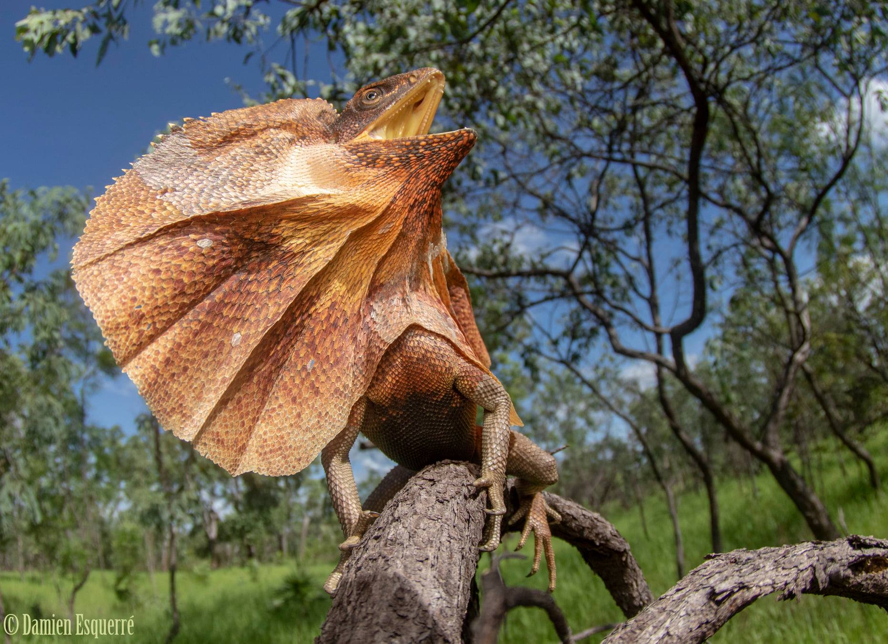
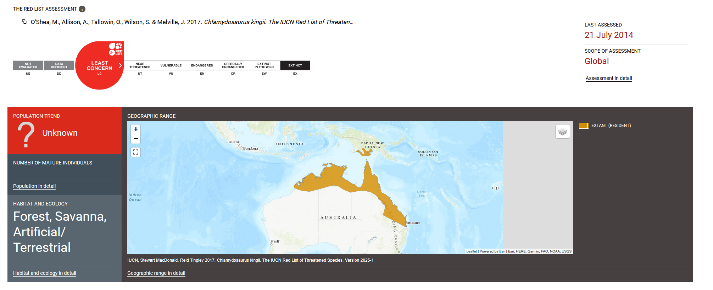

# If not installed use the pacman package to both install and load packages
install.packages("pacman")
library(pacman)
# Use pacman::p_load
pacman::p_load(terra) # For raster and vector data
pacman::p_load(sf) # For vector data
pacman::p_load(sp)
pacman::p_load(ggplot2) # For plotting
pacman::p_load(rnaturalearth) # For polygons
pacman::p_load(dplyr) # For data wrangling
# To make Alpha-Hulls we need to install a package from GitHub as well
remotes::install_github("babichmorrowc/hull2spatial")
pacman::p_load(hull2spatial)
pacman::p_load(alphahull) # Required by hull2spatial internallySpecies Distribution Modeling in R: Week 11
Before We Begin
To make sure we’re all on the same page and have access to the data, do this at the start of the workshop.
Download the GitHub repository github.com
Open RStudio
Open Week 11 project file in RStudio
Introduction
Today we are going to learn to work with with one of the most commonly used spatial data types in R - observation records. Observation records are point samples where a variable of interest and the geographic coordinates, in latitude and longitude, have been recorded. Observation data in this format could record all kinds of information, from the location of McDonalds restaurants, to the presence of recorded cases of particular CoVID-19 strains, to sightings of organisms in the wild. Today, we will focus on the latter. We will start by taking occurrence records for one of Australia’s most iconic vertebrate species - the Frilled Lizard (Chlamydosaurus kingii) - from the Atlas of Living Australia (ALA) and identifying common errors or biases in spatial data. We will look at how to clean and subset the data in preparation for modeling the species distribution using a niche model.

The Data
The ALA is a collaborative, digital, open infrastructure that pulls together Australian biodiversity data from multiple sources, making it accessible and reusable. It hosts an enormous amount of open source biodiversity data that can be readily downloaded, and even has it’s own R package to help do so (galah). As you need a registered email address to use galah, today we will focus on a dataset I have already downloaded. For reproducibility, every dataset downloaded from ALA is given a Digital Object Identifier (DOI) so anyone can download the exact same one. Here is our one for the Frilled Lizard, but you can also load this in from the distribution folder.
1: Loading and visualising the data
R libraries
Load ALA data
The distribution data from ALA is ready for you in the “distribution” folder.
# read in occurence records
occ <- read.csv("distribution/frilled_lizard_ALA.csv")Inspect the data
# take a look at first few rows
head(occ)
# You can see there is a lot of meta-data - for example we can see what kinds of observations the records are from
unique(occ$basisOfRecord)
# how many records do we have?
nrow(occ)Plot ALA records
Lets visualise where the records are.
# First, remove any rows with missing coordinates
occ <- occ %>%
filter(!is.na(decimalLongitude) & !is.na(decimalLatitude))
# Ssing the sf pacakge, turn the records in spatial points
occ_sf <- st_as_sf(occ, coords = c("decimalLongitude", "decimalLatitude"), crs = 4326)
# Bounding box from your occurrence records - this is the extent the records cover
bbox <- st_bbox(occ_sf)
# Load the world map from rnaturalearth pacakge
world <- ne_countries(scale = "medium", returnclass = "sf")Task 1
Plot out the occurence records using the ggplot2 package. Change the colour argument in aes() call in geom_sf() to colour the points by a variable in the ‘occ’ data. Have a go at plotting by different variables to see if there are any spatial patterns (example below).
# Plot using ggplot2
ggplot() +
geom_sf(data = world, fill = "gray95", color = "gray40") + # this line adds the world map
geom_sf(data = occ_sf, aes(colour=basisOfRecord), alpha = 0.6, size = 1) + # this line adds the occurence records
coord_sf( # this section crops the map to the area surrounding the occurence records, ratehr than the whole globe
xlim = c(bbox["xmin"]-10, bbox["xmax"]+10), # add 10 degrees on either side
ylim = c(bbox["ymin"]-10, bbox["ymax"]+10),
expand = FALSE) +
theme_minimal() + # this adds the theme elements to make it pretty
labs(title = "Occurrence Records for the Frilled Lizard", x = "Longitude", y = "Latitude") # this adds the labels- Question: What can you notice about the distribution of occurrence records? Anything unusual?
2: Cleaning the data
Given a spatial dataset, we are often faced with the challenge of determining which points are true observations of wild organisms and which are errors, preserved specimens from museums/herbaria, invasive or non-natural observations (for example ornamental plants in peoples homes are often well outside their native distributions).
Luckily, for many species, we have expert opinion on where the species native distribution is. For most animals, as well as many plants, and increasingly fungi, the International Union for the Conservation of Nature (IUCN) is a leading source of reliable geographic range information for most species. For example, the Frilled Lizard’s geographic range and conservation status was assessed by the IUCN in 2014 (link here).

We can use this range information to help us clean the ALA records, including only those that are within the known distribution of the Frilled Lizard. To do this we can download the spatial polygon of the species range from the IUCN. This is downloaded as a shapefile from the IUCN Redlist website - a format which contains several ancillary files (.cpg, .dbf, .shp, .shx, and .prj).
Load the IUCN data
# read in the IUCN polygon using the sf package
iucn_sf <- st_read("distribution/frilled_lizard.shp")
# plot with our occurence records
ggplot() +
geom_sf(data = world, fill = "gray95", color = "gray40") + # this line adds the world map
geom_sf(data = occ_sf, aes(), color = "#0072B2", alpha = 0.6, size = 1) + # this line adds the occurence records
geom_sf(data = iucn_sf, fill = "#009E73", color = "#007F5F", alpha = 0.4) +
coord_sf( # this section crops the map to the area surrounding the occurence records, ratehr than the whole globe
xlim = c(bbox["xmin"]-10, bbox["xmax"]+10), # add 10 degrees on either side
ylim = c(bbox["ymin"]-10, bbox["ymax"]+10),
expand = FALSE) +
theme_minimal() + # this adds the theme elements to make it pretty
labs(title = "Occurrence Records for the Frilled Lizard", x = "Longitude", y = "Latitude") # this adds the labelsThis raises an interesting problem. There are clearly some points well outside the species natural range, for example, in Perth, Sydney, New Caledonia, and even one point way off in the middle of the Pacific ocean to the north. But there are other points that could be plausibly part of the species range, for example, the cluster of points around Mt. Isa (140E, 22S). On the other hand, there are clearly parts of the IUCN polygon with no observations within them.
- Question: explain the differences between these two data sources that might lead to different estimates of the species range - mention error, biases, and overestimation versus underestimation of the range.
To remove the obviously erroneous data, we could simply crop the occurrence points using the IUCN polygon, therefore deferring responsibility to the IUCN expert panel. However, your intuition probably tells you that some of those nearby points are also likely to be true occurrences.
One solution, then, is to crop the occurrence data using a buffer distance from the IUCN polygon. Lets plot out some buffer distances to see what they look like.
Buffer IUCN Data
Selecting an appropriate buffer distance to remove potentially erroneous points is a difficult task as there is not necessarily a set of hard-and-fast rules. We want to balance including points that could reasonably be considered part of the species range without including obviously wrong points.
Task 2
Plot different buffer sizes and decide which size is most appropriate for the frilled lizard.
# choose buffer distance in meters
buffer_distance <- XXX # CHANGE THIS
# create buffer in sf
buffer_iucn <- st_buffer(iucn_sf, buffer_distance)
# Buffers + original IUCN range + all occurrence points
ggplot() +
geom_sf(data = buffer_iucn, color = "black", show.legend = TRUE, alpha=0.2) +
geom_sf(data = iucn_sf, fill = "#009E73", color = "#007F5F", alpha = 0.5) +
geom_sf(data = occ_sf, color = "#D55E00", alpha = 0.7, size = 1) +
scale_fill_viridis_d(name = "Buffer size") +
coord_sf(expand = FALSE) +
theme_minimal() +
labs(title = "IUCN Range with Buffer and Occurrence Points",
x = "Longitude", y = "Latitude")Take a look and decide which strategy you’d like to take with cropping the records. you can either take all the records, filter based on IUCN polygon, or filter based on a buffered IUCN polygon.
- Question: Is any distance more justifiable than others? Which buffer size did you select and why?
Crop Occurrence Records with Buffer
# subset only the points that fall within the polygon
occ_cropped <- occ_sf[lengths(st_within(occ_sf, buffer_iucn)) > 0, ]
# create a data frame and we'll save it for use in next week's prac
occ_cropped_df <- as.data.frame(st_coordinates(occ_cropped))
# write it as a csv
write.csv(occ_cropped_df, file="distribution/frilled_lizard_ALA_cropped.csv", row.names = F)
# crop the polygon by the coastline
sf_use_s2(FALSE)
buffer_iucn <- st_intersection(st_make_valid(buffer_iucn), world)
sf_use_s2(TRUE)
# Plot polygon and the cropped points
ggplot() +
geom_sf(data = buffer_iucn, fill = "#56B4E9", color = "black", alpha = 0.3) +
geom_sf(data = iucn_sf, fill = "#009E73", color = "#007F5F", alpha = 0.5) +
geom_sf(data = occ_cropped, color = "#D55E00", size = 1) +
coord_sf(expand = FALSE) +
theme_minimal() +
labs(title = "Occurrence Points Within Buffered Polygon",
x = "Longitude", y = "Latitude")Now we have a roughly cleaned data set of species occurrences from ALA. We are happy that they fall within the likely range of the Frilled Lizard. However, we have noted that both the IUCN polygon and ALA occurrence records each have biases which mean they might over- or under-estimate the species range.
3: Geometric Species Distribution Models
The final part of this week’s prac is estimating an outline of the species range from occurence records. Reconstructions of species ranges are known as species distribution models (SDM) and the most simplistic of these rely only on geometric models from spatial records. We will explore these today and next week we will look at more complex models that attempt to estimate the species environmental niche in order to reconstruct suitable habitat.
Convex Hulls
Convex hulls, also known as minimum convex polygons (MCP) are one of the most straightforward ways to get an estimate of a species range from occurrence records. A convex hull is an outline of the records that includes only convex internal angles (i.e. < 180 degrees).
# Convert sf to data.frame to extract coordinates
coords <- st_coordinates(occ_cropped)
lon <- coords[, "X"]
lat <- coords[, "Y"]
# Compute Convex Hull indices
hull_indices <- chull(lon, lat)
# Ensure it's a closed polygon (repeat first point at the end)
hull_indices <- c(hull_indices, hull_indices[1])
# Create a matrix of hull coordinates
hull_coords <- cbind(lon[hull_indices], lat[hull_indices])
# Convert convex hull to an sf POLYGON
hull_polygon <- st_polygon(list(hull_coords))
hull_sf <- st_sfc(hull_polygon, crs = 4326)
hull_sf <- st_sf(geometry = hull_sf)
# crop the convex hull by the coastline
sf_use_s2(FALSE)
hull_sf <- st_intersection(st_make_valid(hull_sf), world)
sf_use_s2(TRUE)
# Plot Convex Hull
ggplot() +
geom_sf(data = occ_cropped, color = "#DD1C77", size = 0.8, alpha=0.5) +
geom_sf(data = hull_sf, fill = NA, color = "#08519C") +
theme_minimal() +
labs(title = "Convex Hull from Cropped Occurrences")Alpha Hulls
Alpha hulls are slightly more complex models which allow for non-linear, concave links between points. The degree of concavity is determined by the alpha value.
Task 3
Choose different alpha values and see how this affects the alpha hull (Hint: values are < 10 generally).
alpha <- XXX # choose alpha value
# Compute Alpha Hull
xy_df <- data.frame(x = lon, y = lat)
xy_df <- unique(round(xy_df, 4))
ahull_obj <- ahull(xy_df, alpha = alpha)We now want to turn the alpha hull object into an object of class “sf”. This is because the alpha package uses its own class that is not compatible with most other R packages (like ggplot2). To do this we will use the hull2spatial package, but this requires a few steps to first convert the object to class “sp” (which is now depreciated) and then to class “sf”.
# Convert alpha hull to sf POLYGON
ahull_spatial <- ahull2poly(ahull_obj)
# Convert each sub-polygon to its own SpatialPolygons object
poly_list <- lapply(seq_along(sub_polys), function(i) {
# Create a SpatialPolygons object with one sub-polygon
SpatialPolygons(list(Polygons(list(sub_polys[[i]]), ID = as.character(i))))
})
# Convert each to sf and combine into one sf object
sf_list <- lapply(poly_list, st_as_sf)
ahull_sf <- do.call(rbind, sf_list)
# Add an ID column (optional)
ahull_sf$id <- seq_len(nrow(ahull_sf))
st_crs(ahull_sf) <- 4326 # Set CRS
# crop the convex hull by the coastline
sf_use_s2(FALSE)
ahull_sf <- st_intersection(st_make_valid(ahull_sf), world)
sf_use_s2(TRUE)Now we have the alpha hull as class sf, we can plot it out!
ggplot() +
geom_sf(data = occ_cropped, color = "#DD1C77", size = 0.8, alpha=0.5) +
geom_sf(data = ahull_sf, fill = NA, color = "#D94801") +
theme_minimal() +
coord_sf(expand = FALSE) +
labs(
title = "Frilled Lizard Distributions and Range Envelopes",
subtitle = "IUCN range, buffer zone, convex and alpha hulls, and occurrence records",
x = "Longitude", y = "Latitude"
) +
theme(
#legend.position = "none",
panel.grid.major = element_line(color = "gray90", size = 0.3),
panel.background = element_rect(fill = "white")
)Save the alpha hull as we will use it again in next week’s prac
st_write(ahull_sf, "distribution/frilled_lizard_alpha_hull.shp")- Question: what trade-offs are involved in choosing smaller vs larger alpha values for representing the species’ distribution?
Putting it together
Finally lets just put everything on a single plot to see how the different methods differ!
# Add a new column to each sf object for identifying it in the legend
ahull_sf$layer <- "Alpha Hull"
hull_sf$layer <- "Convex Hull"
iucn_sf$layer <- "IUCN Range"
buffer_iucn$layer <- "Buffer Zone"
occ_cropped$layer <- "Occurrences"
# Plot with color mapped to `layer`
ggplot() +
geom_sf(data = occ_cropped, aes(color = layer), size = 0.8, alpha = 0.5) +
geom_sf(data = ahull_sf, aes(color = layer), fill = NA) +
geom_sf(data = buffer_iucn, aes(color = layer), fill = NA) +
geom_sf(data = iucn_sf, aes(color = layer), fill = NA) +
geom_sf(data = hull_sf, aes(color = layer), fill = NA) +
scale_color_manual(
name = "Layer",
values = c(
"Occurrences" = "#DD1C77",
"Alpha Hull" = "#D94801",
"Buffer Zone" = "#6BAED6",
"IUCN Range" = "#238B45",
"Convex Hull" = "#08519C"
)
) +
theme_minimal() +
coord_sf(expand = FALSE) +
labs(
title = "Frilled Lizard Distributions and Range Envelopes",
subtitle = "IUCN range, buffer zone, convex and alpha hulls, and occurrence records",
x = "Longitude", y = "Latitude"
) +
theme(
panel.grid.major = element_line(color = "gray90", size = 0.3),
panel.background = element_rect(fill = "white")
)